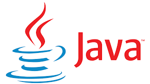
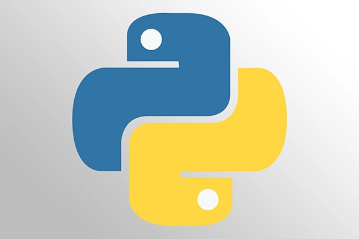
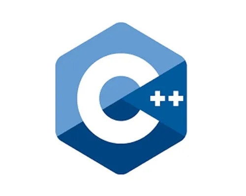
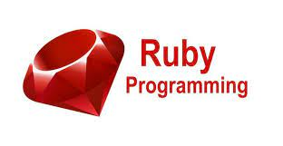
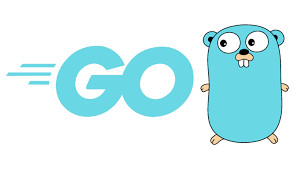

Java
Java adalah salah satu bahasa pemrograman populer yang digunakan untuk mengembangkan aplikasi mobile, desktop, hingga website. Beberapa website besar dunia seperti, Yahoo!, LinkedIn, dan Spotify ternyata juga telah menggunakan Java untuk mengembangkan websitenya. Bahasa ini telah menjadi pilihan populer di antara developer selama lebih dari dua dekade, dengan jutaan aplikasi Java yang digunakan saat ini. Java merupakan bahasa multiplatform yang berorientasi pada objek dan berpusat pada jaringan yang dapat digunakan sebagai platform di dalamnya. Java merupakan bahasa pemrograman yang cepat, aman, dan andal untuk mengodekan segala sesuatu mulai dari aplikasi seluler dan perangkat lunak korporasi hingga aplikasi big data dan teknologi sisi server.
Python
Python programming adalah salah satu bahasa pemrograman paling populer di dunia. Python merupakan bahasa pemrograman yang dirancang untuk digunakan dalam berbagai aplikasi, pengembangan software, website, otomatisasi, hingga digunakan dalam berbagai ilmu data. Bahkan, Python telah menciptakan banyak algoritma mulai dari rekomendasi Netflix hingga mobil yang bisa mengemudi sendiri. Proses pengkodean Python sangat sederhana sehingga memberikan keleluasaan bagi developer untuk mengembangkan fitur dari suatu aplikasi atau situs. Python juga banyak diaplikasikan pada berbagai sistem operasi seperti Amiga, Palm, Linux, Microsoft Windows, OS, dll. Dalam perkembangannya Python tak hanya digunakan dalam dunia teknologi, namun juga digunakan dalam berbagai hal lain seperti analisis. Saking banyaknya digunakan, Python menempati nomor satu bahasa pemrograman paling populer di tahun 2022
C++
Bahasa pemrograman C++ adalah bahasa yang bisa digunakan untuk membuat berbagai aplikasi. Misalnya, aplikasi pengolah gambar, software gadget, game, hingga sistem operasi baru. C++ adalah salah satu bahasa pemrograman yang merupakan hasil dari pengembangan bahasa C. Bedanya, C++ lebih berorientasi pada objek dan membagi permasalahan ke dalam beberapa kelas berisi deskripsi objek untuk kemudian dipecahkan melalui metode pengolahan. Program ini banyak digunakan oleh perusahaan software raksasa seperti Adobe dan Firefox.
Ruby
Ruby adalah bahasa pemrograman berbasis skrip yang berorientasi pada objek. Ruby bersifat open source, biasanya digunakan untuk membangun dan mengembangkan aplikasi web yang sederhana dan cepat. Ruby dikembangkan oleh programmer asal Jepang bernama Yukihiro Matsumoto (Matz). Pada tahun 1993, Ia mulai membangun Ruby dengan tujuan menciptakan bahasa pemrograman yang dapat ditulis secara efisien. Ruby kemudian dirilis ke publik pada Desember 1995 dan mendapat respon yang baik. Semakin lama, Ruby berhasil meraih popularitas hingga ke seluruh dunia. Hal ini karena Ruby dapat disalin, dimodifikasi, dan didistribusikan ulang, sehingga banyak programmer seluruh dunia menggunakan Ruby.
JavaScript

Javascript adalah bahasa pemrograman yang digunakan untuk pengembangan website agar lebih dinamis. Ibarat kata, JavaScript memberikan “kehidupan” dalam website sehingga terciptanya interaksi antara pengunjung dengan situs tersebut. Awalnya, JavaScript hanya bekerja pada sisi client/frontend saja. Dengan begitu, proses pengolahan kode-kodenya hanya berjalan di sisi browser. Namun, seiring perkembangannya, JavaScript juga bisa digunakan di sisi server. Penggunaan JavaScript dalam pengembangan website sering dikaitkan dengan HTML dan CSS. Hal ini karena dalam pembuatan website, ketiga elemen tersebut berperan penting dan saling berkaitan satu sama lain.
Golang
Go Language merupakan kepanjangan dari bahasa pemrograman satu ini. Seperti kita tahu namanya diawali dengan Go, ya benar dia merupakan bahasa pemrograman yang dikelola oleh Google. Google tidak bekerja sendirian, melainkan bekerja sama dengan 3 orang tokoh handal pada tahun 2009. Robert Griesemer, Rob Pike dan Ken Thompson merupakan ketiga tokoh tersebut. Bahasa pemrograman satu ini bisa diketik secara statis dan dapat menghasilkan kode-kode biner pada mesin yang dikompilasikan dengannya. Berasal dari abad ke-21, bahasa pemrograman Golang berusaha menghimpun bahasa-bahasa pemrograman pendahulunya. Pembuatan website, aplikasi maupun software juga bisa menggunakan bahasa pemrograman ini.